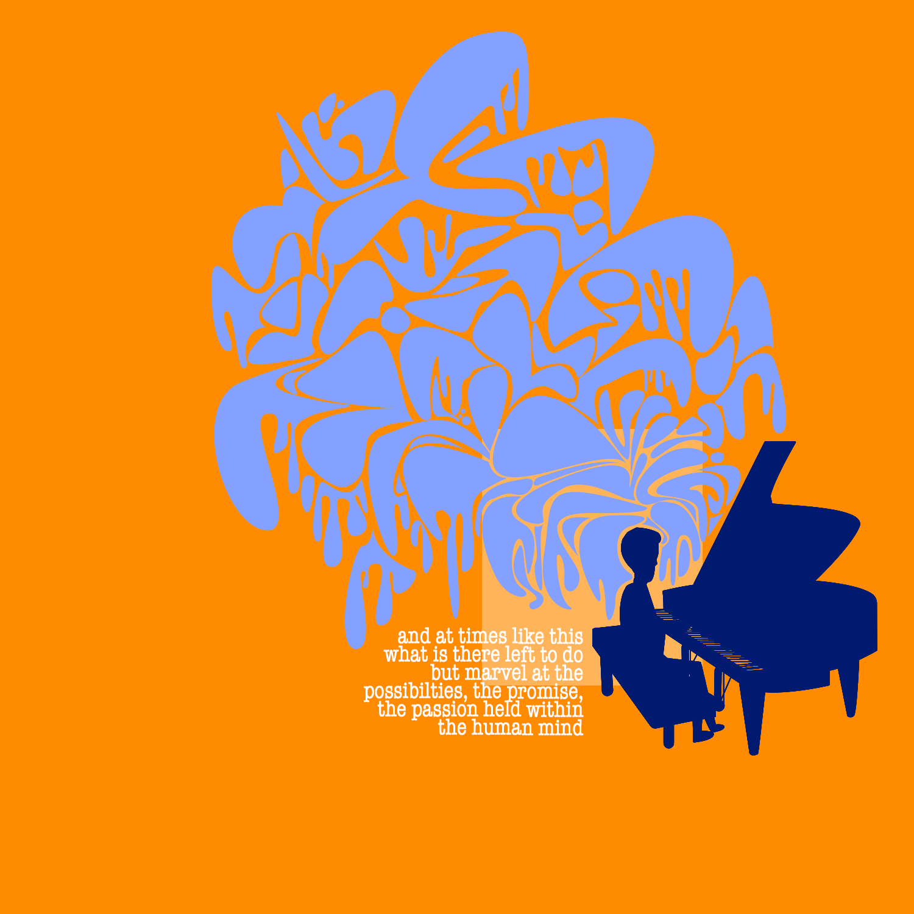

WHAT'S BLACK AND WHITE AND RED ALL OVER?
A Warhol and Litchenstein inspired piece depicting heart-shaped balloons in the sky, unfortunately not immune to the human curse of exclusion. Done in Adobe Photoshop.
A Warhol and Litchenstein inspired piece depicting heart-shaped balloons in the sky, unfortunately not immune to the human curse of exclusion. Done in Adobe Photoshop.

A STUDY IN COLOR
A line-art piece that proves that coloring outside the lines can, in fact, be conductive to good art. Done in Adobe Photoshop.
A line-art piece that proves that coloring outside the lines can, in fact, be conductive to good art. Done in Adobe Photoshop.
FAMILY
An illustration that portrays love, care, and protection, in a medium that isn't your typical Chrismas card posed happiness. Done in Adobe Photoshop.
An illustration that portrays love, care, and protection, in a medium that isn't your typical Chrismas card posed happiness. Done in Adobe Photoshop.

THE WICKED WITCH OF NOWHERE SPECIAL
Who says only historical figures like Julius Cesear get fancy busts? This flat portrait pictures such a statue melting, although in a more dignified way than the well-known literary villian. Done in Adobe Photoshop
Who says only historical figures like Julius Cesear get fancy busts? This flat portrait pictures such a statue melting, although in a more dignified way than the well-known literary villian. Done in Adobe Photoshop

THINK OF SOMETHING, YOU'RE THE PIANO MAN!!
A contemplative illustration that conveys the expansiveness of thought that can overcome someone while doing something you love. Done in Adobe Photoshop.
A contemplative illustration that conveys the expansiveness of thought that can overcome someone while doing something you love. Done in Adobe Photoshop.

AN ODE TO PICASSO
A line-art piece inspired by Picasso's Cubist faces, that attempts to portray the same kind of organized-disorder in more organic shapes. Done in Adobe Photoshop.
A line-art piece inspired by Picasso's Cubist faces, that attempts to portray the same kind of organized-disorder in more organic shapes. Done in Adobe Photoshop.

ORANGE
A fun piece that shows some much-needed appreciation to the color that is also a fruit. Done in Adobe Photoshop.
A fun piece that shows some much-needed appreciation to the color that is also a fruit. Done in Adobe Photoshop.
AN ARCHITECT'S NIGHTMARE
A flat landscape that features an idyllic city with way too many curved shapes to be easy to engineer or construct in any way. Done in Adobe Photoshop.
A flat landscape that features an idyllic city with way too many curved shapes to be easy to engineer or construct in any way. Done in Adobe Photoshop.